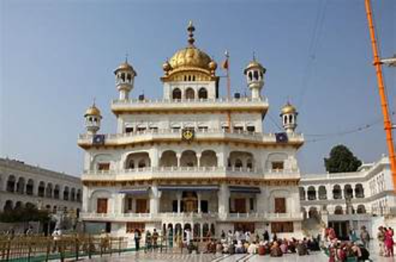
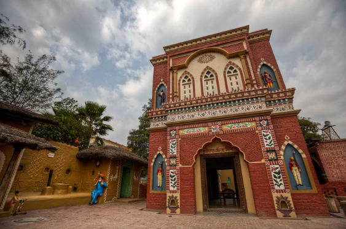
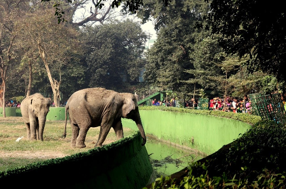

Akaltakht

The Akal Takht, meaning "Throne of the Timeless One," is one of the five seats of temporal authority of the Sikhs. It is located in the Harmandir Sahib complex, also known as the Golden Temple, in Amritsar, Punjab, India. The Akal Takht serves as the highest political institution of the Sikhs and is considered the central place of authority for Sikh religious and political affairs. It was established by the sixth Sikh Guru, Guru Hargobind Ji, in 1606 and has historically been a symbol of Sikh sovereignty and justice. The Akal Takht plays a crucial role in the Sikh community, addressing issues of social, political, and religious significance.
months:the most popular time to visit is during the cooler months, from October to March.The Akal Takht is a symbol of Sikh sovereignty and justice and plays a crucial role in the religious and political life of the Sikh community. It is a place where important decisions related to Sikh religious and social matters are deliberated upon and where religious edicts (Hukamnamas) are issued.
Rangla Punjab Haveli

Rangla Punjab Haveli is a popular tourist destination located in Jalandhar, Punjab, India. It's a cultural village resort that offers visitors a glimpse into the vibrant culture and traditions of Punjab. The haveli (traditional mansion) features architecture and décor reminiscent of rural Punjab, with elements like colorful frescoes, traditional furnishings, and folk art.
months:Rangla Punjab Haveli can be visited throughout the year, but the most pleasant months weather-wise are from October to March.Rangla Punjab Haveli hosts a range of cultural activities and performances, including live music, folk dances such as Bhangra and Giddha, and traditional Punjabi rituals and ceremonies. Visitors can enjoy authentic Punjabi cuisine served in a traditional setting, with specialties such as tandoori dishes, sarson da saag with makki di roti, and lassi.
Bhatinda Zoological Park

Bhatinda Zoological Park, also known as Bir Talab Zoo, is located near Bathinda city in Punjab, India. It houses a variety of wildlife species including lions, tigers, deer, bears, birds, and reptiles, making it a popular attraction for visitors to explore and appreciate the region's fauna.
months:The best time to visit is during the cooler months from October to March for a comfortable outdoor experience.In addition to viewing the animals, visitors to the zoo can also enjoy leisurely walks along well-maintained pathways, shaded by trees and offering scenic views of the surrounding lake and landscape. There are also facilities for children, including playgrounds and picnic areas, making it a popular destination for families.
The Bhatinda Zoological Park aims to promote awareness and conservation of wildlife among visitors, as well as provide recreational and educational opportunities for people of all ages.